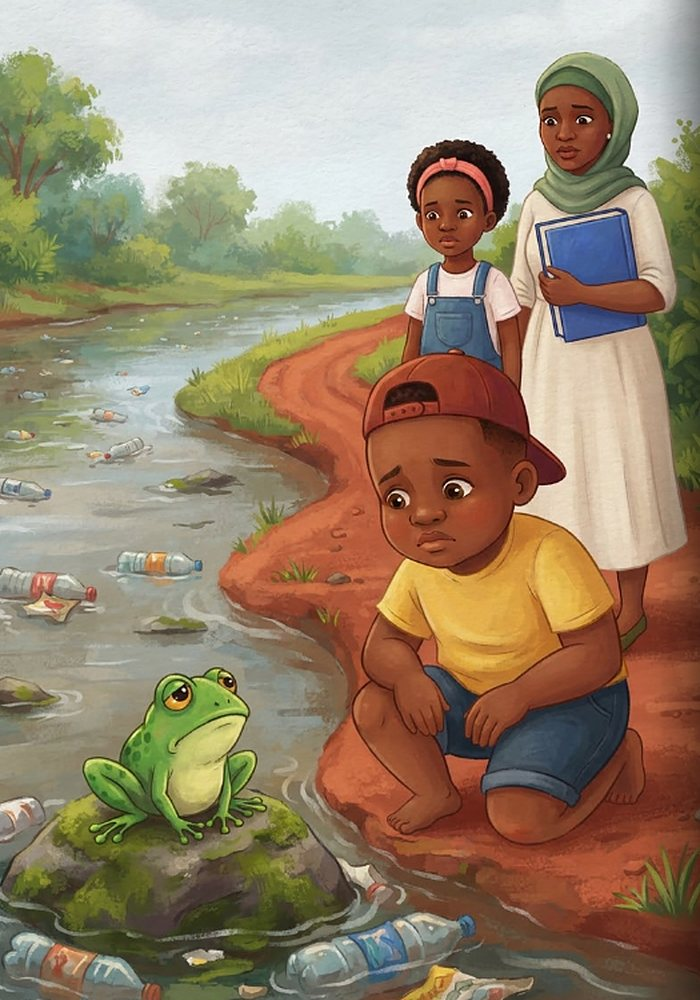
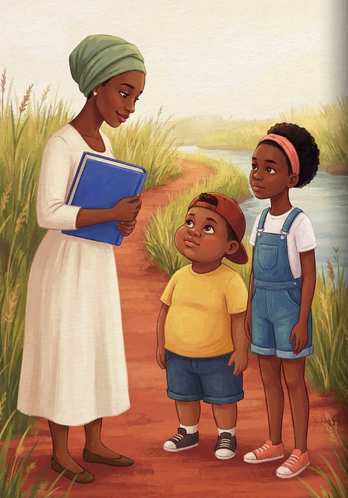
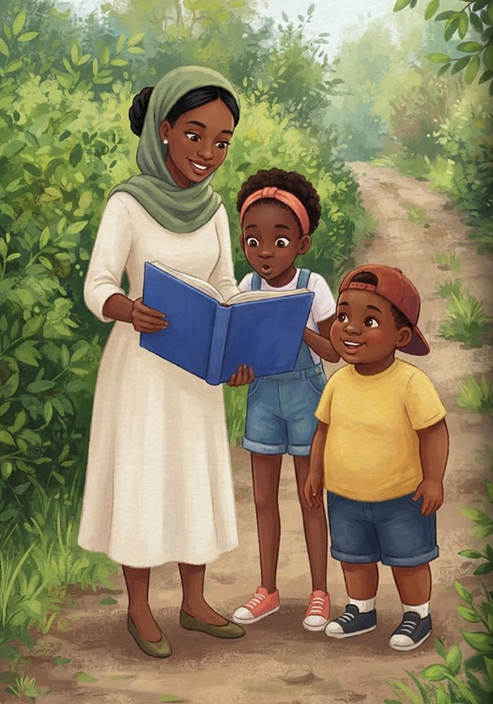
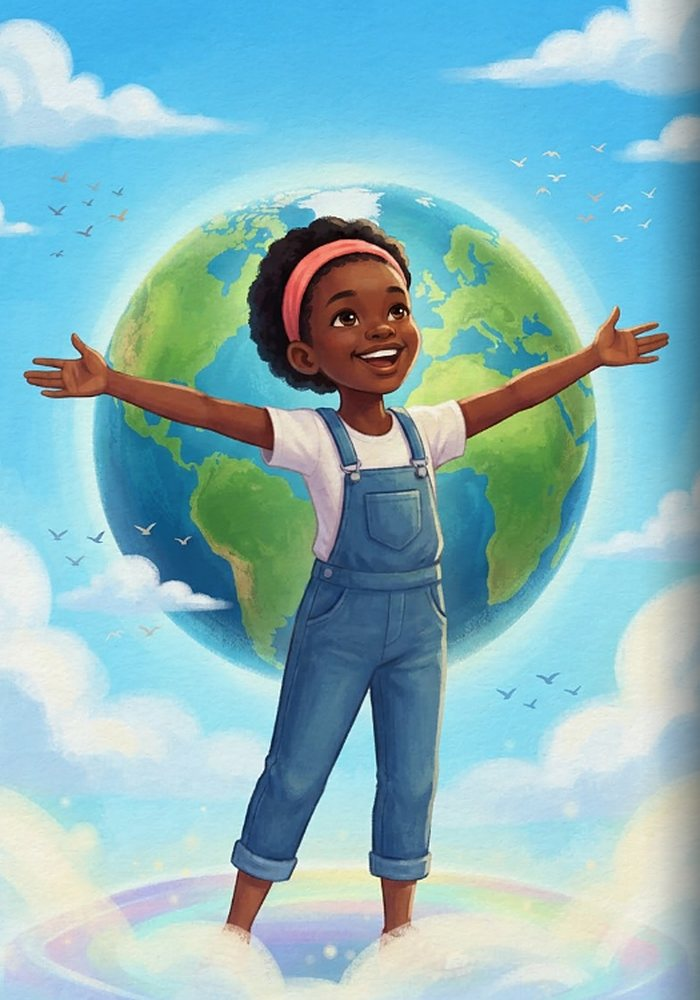
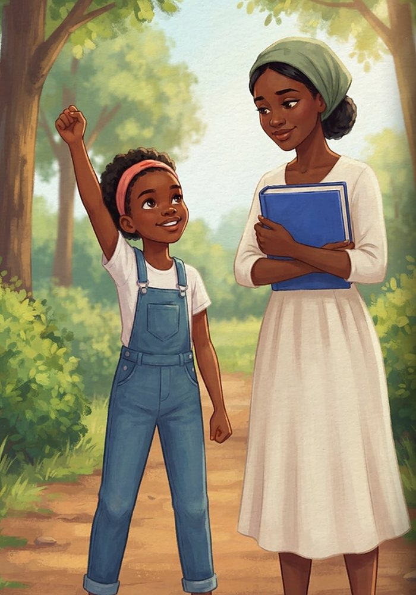
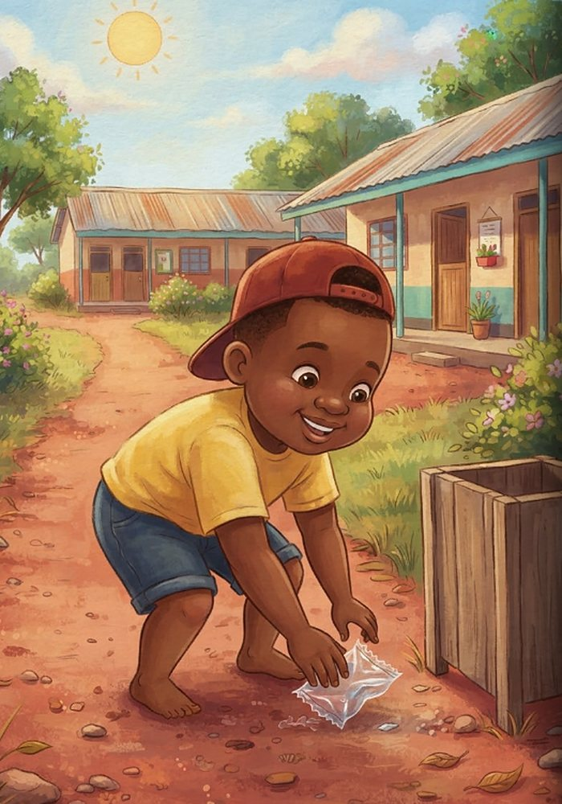
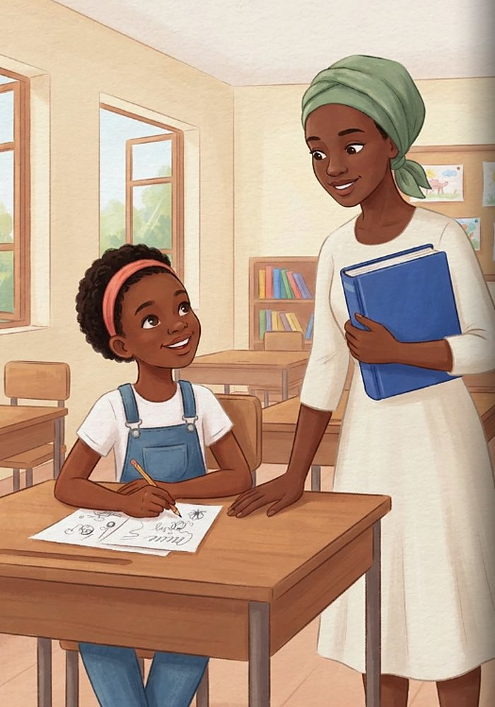
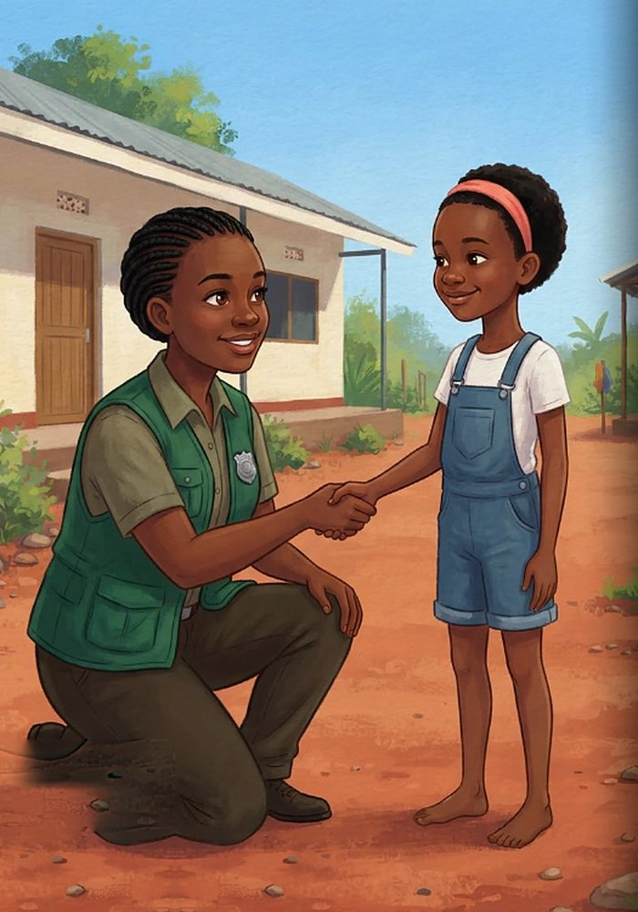
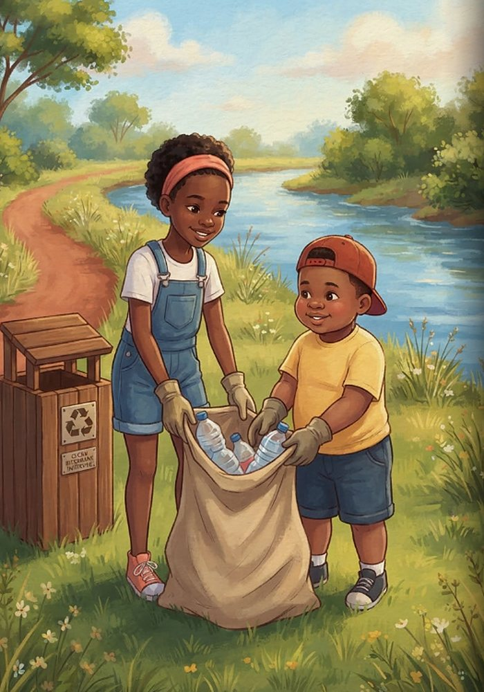
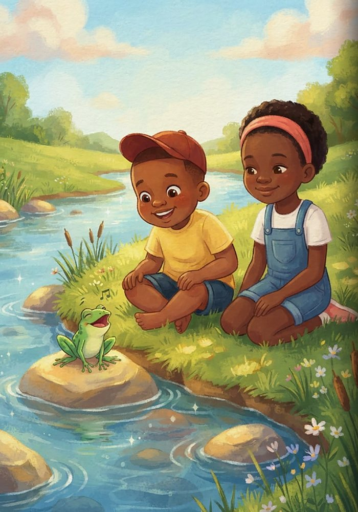

Imani and the River Promise
Learn more about environmental rights
- Your right to a clean and healthy environment
- What Article 42 of Kenya’s Constitution says
- Why children’s voices matter
- How to speak up safely about pollution
Plastic is choking the river on the way to school, and Imani and her cousin Juma want to know who can fix it. Auntie Halima shows them that a clean, healthy environment is every child’s right, and that rights come with duties too.

Every morning, ten-year-old Imani and her eight-year-old cousin Juma walked to school with Auntie Halima. Their path ran beside the mto—the local river. But today, floating plastic bottles choked the sluggish stream, and a foul smell filled the air. On a muddy rock, a tiny green frog with golden eyes sat drooping quietly. “Look, Imani,” Juma whispered softly. “Even little chura looks sad.”

“Why is the river so dirty?” Juma asked, scowling at the trapped plastic. “Can somebody fix this?” Auntie Halima smiled gently at his concern. “To fix it, we first have to understand our rights,” she said. “Rights are fundamental things that every single person should have and be protected to have—like going to school, staying healthy, and being kept safe from harm.”

Auntie Halima unclasped her bag and held up a thick blue book. “This is Kenya’s Constitution, the highest law of our land,” she explained. “Article 42 clearly states that every person has the right to a clean and healthy environment. That means grown-ups, and it means children too!” Imani’s eyes lit up. “So the river belongs to our rights?” “It certainly does,” Auntie Halima replied.

Imani closed her eyes and pictured children from every corner of the world standing together under a bright blue sky. Auntie Halima continued, “In 2022, the United Nations agreed that a clean, healthy, and sustainable environment is a universal human right for everyone on Earth. Clean air and fresh water belong to all of us.”

“And there is more,” Auntie Halima added proudly. “Children have the right to be heard on issues that affect their lives. In 2023, a special United Nations committee on children’s rights emphasized that governments must actively protect young people from environmental damage and climate change.” Imani adjusted her coral headband and stood tall. “Then our voices matter!”

“Rights also come with duties,” Auntie Halima reminded them. “Every person has a responsibility to help protect and look after nature.” Juma suddenly remembered a sweet wrapper he had dropped on the ground the day before. Feeling a surge of determination, he bent down, picked up a stray plastic wrapper from the dusty path, and placed it inside a nearby trash bin. “I’m doing my duty!” Juma declared.

At school, Imani raised her hand and spoke up about the river. Her teacher and Auntie Halima helped the class draft a polite letter to the local county government. In the letter, the students described the dirty mto and asked for new public bins and assistance in restoring the water. Imani carefully signed her name at the bottom with a firm, steady hand.

A few days later, a friendly county officer visited the school assembly. “Thank you for speaking up,” she said warmly to the students. “When you notice pollution, always inform a trusted adult. Grown-ups can formally report environmental harm directly to the county government or to NEMA, Kenya’s national environment authority.”

On Saturday, the community gathered for an organized river cleanup! Grown-ups carefully removed dirty and sharp debris from deep in the water, while children wearing protective thick gloves collected light plastic items along the dry bank, staying safely away from the water’s edge. Brand-new trash bins were securely placed along the pathway.

Weeks passed, and the mto glistened under the bright Kenyan sun, clear and free of plastic. High on his favorite sunny rock, chura let out a cheerful song that echoed along the clean banks. Imani and Juma smiled, knowing that making a promise to nature keeps the whole community healthy. Find one place near you that could be cleaner—and with a trusted grown-up, make a plan to help!